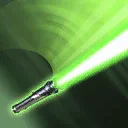
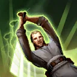
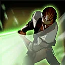

Qui-Gon Jinn
Versatile attacker focused on generating extra attacks.
Versatile attacker focused on generating extra attacks.

Deal Physical damage to target enemy with a 65% chance to remove 30% Turn Meter from them. 65% chance to gain 30% Turn Meter.

Deal Special damage to target enemy and call another random ally to assist. The assisting ally deals 75% more damage and recovers 20% Health.

Deal Special damage to target enemy and dispel all buffs on them. If a buff was dispelled, all allies gain Offense Up for 3 turns.

Jedi allies have +30 Speed, gain Offense equal to 3 times their Speed, and gain Foresight for 2 turns at the start of each encounter and whenever any unit is defeated.
Omicron Boost : While in Grand Arenas: At the start of battle if there are no Galactic Legends and all allies are Jedi: All other allies instead gain Offense equal to 30 times their Speed, doubled while they have Foresight, and can't be defeated while Qui-Gon Jinn is active. Qui-Gon Jinn can't gain Damage Immunity or Stealth and he can't be revived. When Qui-Gon Jinn is defeated, all allies recover 100% Health and Protection and gain 400% of Qui-Gon Jinn's Offense for 2 turns.